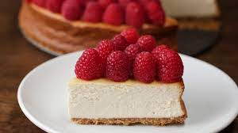

American Cheesecake

The REAL American Cheesecake
Ingredients
For 8 Servings
- 12 graham crackers, crushed
- ½ cup butter(115 g), melted
- 24 oz cream cheese(680 g), at room temperature
- ¼ cup sugar(50 g)
- 4 large eggs
- 1 tablespoon vanilla extract
- hot water, for baking
- mixed berry, for garnish
- fresh mint, for garnish
Preparation
-
Preheat oven to 350ºF (180ºC). Grease a 9-inch springform pan with
nonstick spray.
-
In a medium bowl, stir together the crushed graham crackers and melted
butter until combined.
-
Transfer the graham cracker mixture to the prepared pan and use the
bottom of a dry measuring cup to press into an even layer.
-
Bake the crust for 20 minutes, or until starting to turn golden brown.
Remove from the oven and let cool completely.
-
In a large bowl, mix together the cream cheese and sugar with an
electric hand mixer until smooth.
-
Add the eggs, 1 at a time, beating between each addition until
incorporated. Add the vanilla and beat to combine.
-
Wrap the bottom of the springform pan tightly with aluminum foil. Place
a paper towel in the bottom of a large, high-walled baking dish large
enough to fit the springform pan. Place the springform pan in the baking
dish and pour the cream cheese filling over the crust. Fill the baking
dish with hot water until it reaches halfway up the sides of the
springform pan, being careful not to splash any into the cheesecake.
-
Bake for 1 hour, or until slightly jiggly in the center and set around
the edges. Remove from the oven and let cool completely.
- Refrigerate the cheesecake for 12 hours, or overnight.
-
Release the springform and transfer the cheesecake to a serving platter.
Garnish the top of the cheesecake with fresh berries, then slice and
serve.
- Enjoy!
Return Home